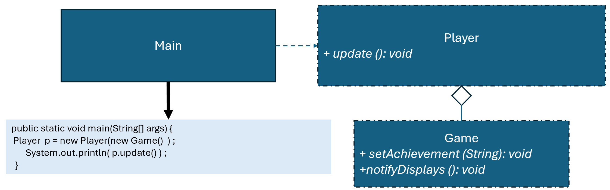

優點
缺點
總評
本次互動以問題說明與情境描述為主，缺乏與AI之間的互動、比較、質疑或逐步建構過程，屬於典型表層說明、陳述性互動，評分依據各面向互動證據給予1至2分，綜合判斷為表層修正（surface-refinement）取向。
import java.util.ArrayList;
interface ISubject {
void registerObserver(IObserver iObserver);
void removeObserver(IObserver iObserver);
void notifyPlayers();
}
interface IObserver {
void update(String level);
}
class Game implements ISubject {
private ArrayList iObservers = new ArrayList<>();
private String achievement;
public String getAchievement() { return achievement; }
public void setAchievement(String achievement) {
this.achievement = achievement;
notifyPlayers();
}
@Override
public void registerObserver(IObserver iObserver) {
iObservers.add(iObserver);
}
@Override
public void removeObserver(IObserver iObserver) {
iObservers.remove(iObserver);
}
@Override
public void notifyPlayers() {
System.out.println("Notifying players about Tutorial Completed achievement: " + achievement);
for (IObserver io : iObservers) {
io.update(achievement);
}
}
}
class Player implements IObserver {
private String name;
public Player(String name) {
this.name = name;
}
@Override
public void update(String level) {
System.out.println("Player : " + name + " received update. New Tutorial Completed achievement: " + level);
}
}
public class Main {
public static void main(String[] args) {
Game game = new Game();
IObserver obs = new Player("Mary");
game.registerObserver(obs);
game.setAchievement("Level 2"); // Player received update from Game New Completed achievement: Level 2
game.removeObserver(obs);
}
}
!@#$報告
新設計有何優點?
這段程式是用觀察者模式（Observer Pattern）設計的遊戲成就通知系統。整體流程就像現實遊戲裡「玩家收到成就通知」的情境：Game 代表遊戲主程式，是主題（Subject），它記錄所有想要收到成就通知的玩家；Player 是觀察者（Observer），會接收遊戲更新並顯示成就。
程式運作方式是這樣的：首先建立一個 Game 物件作為主題，然後建立一個 Player 物件（例如 Mary）並註冊到遊戲中。當遊戲設定新成就（例如 setAchievement("Level 2")）時，遊戲會自動呼叫 notifyPlayers()，把最新成就傳給所有註冊的玩家。Mary 收到訊息後會印出「Player : Mary received update. New Tutorial Completed achievement: Level 2」。如果不想再接收通知，可以呼叫 removeObserver 將玩家移除。
這種設計讓程式擴充性很好。將來如果想新增更多玩家，只要再建立 Player 物件並註冊即可，不需要改動遊戲本身的程式碼。遊戲和玩家之間的耦合度低，責任分明：遊戲只負責管理成就與通知，玩家只負責接收更新並處理顯示。
整體來說，這個範例清楚模擬了遊戲中「多人接收成就更新」的情境，也展示了觀察者模式的核心優勢：低耦合、高擴充、維護方便。!@#$
假設有很多玩家(Player)關注遊戲(Game)闖關成就的變化。
請檢視程式碼介面是否違反 Observer 模式，並撰寫報告，討論新設計有何優點?

public class Main {
public static void main(String[] args) {
ISubject subject = new Game( );
IObserver obs = new Player ("Mary") ;
subject.registerObserver( obs ) ;
((Game)subject).setAchievement("Level 2");
//Player received update from Game New Completed achievement: Level 2
subject.removeObserver( obs ) ;
}
}